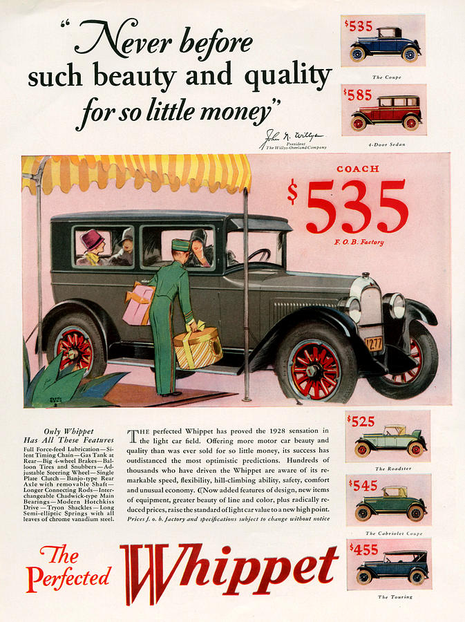
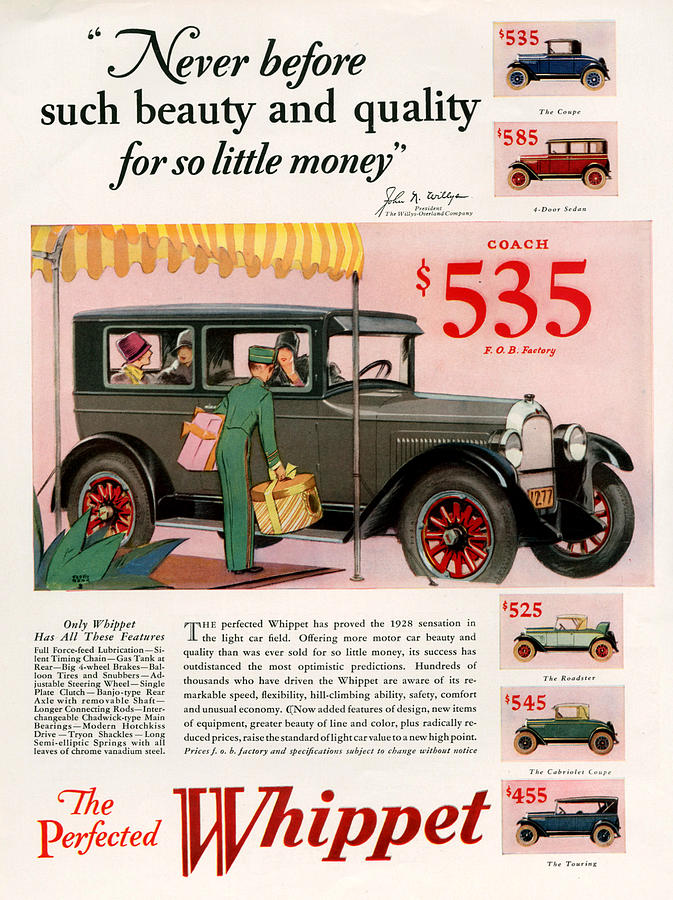
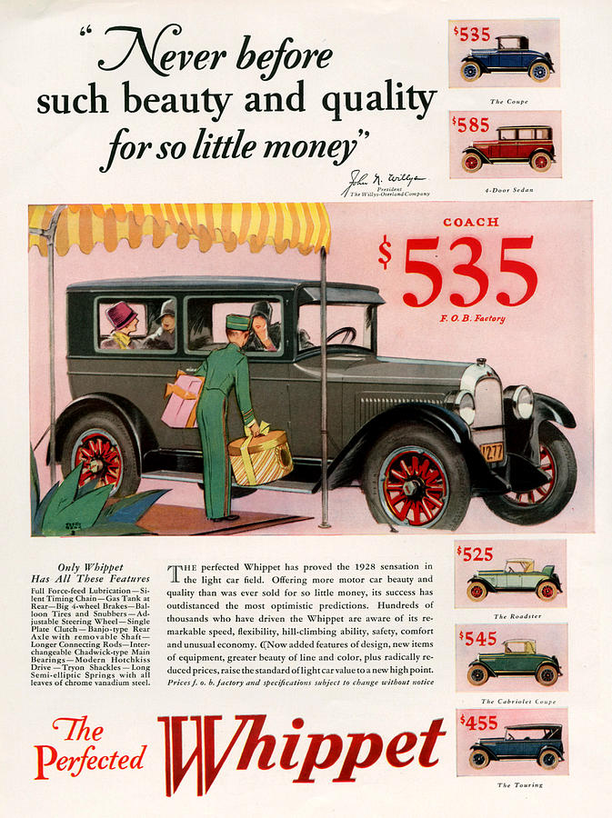

In the 1920s, things that were available only to the Rich previously were now household staples.
These new, cheaper conveinences meant that many common household chores would be eliminated and save hours upon hours of work.

 



How did advancements in technology affect consumer lifestyle in the 1920s?
In the 1920s, things that were available only to the Rich previously were now household staples.
These new, cheaper conveinences meant that many common household chores would be eliminated and save hours upon hours of work.
